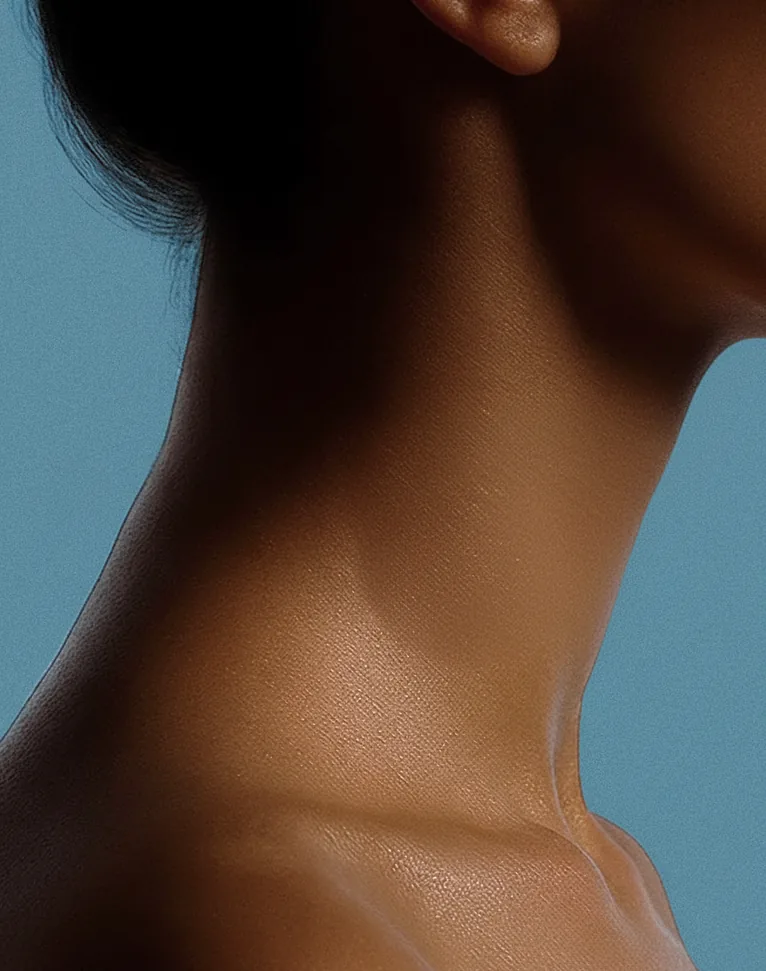
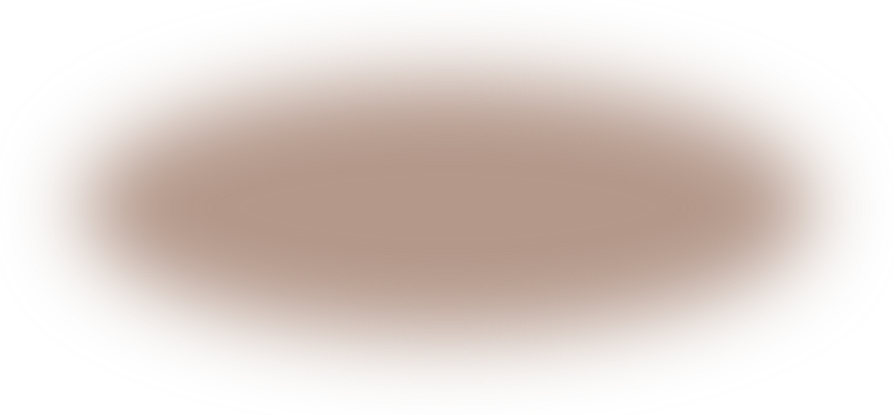
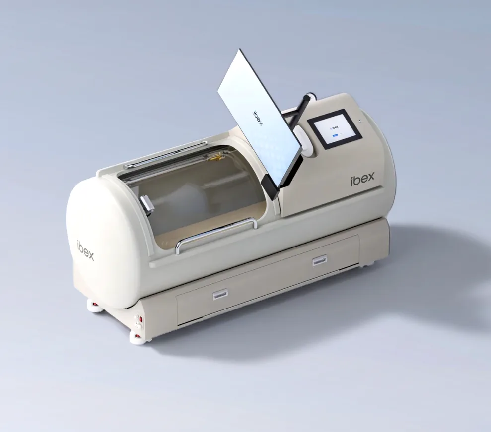
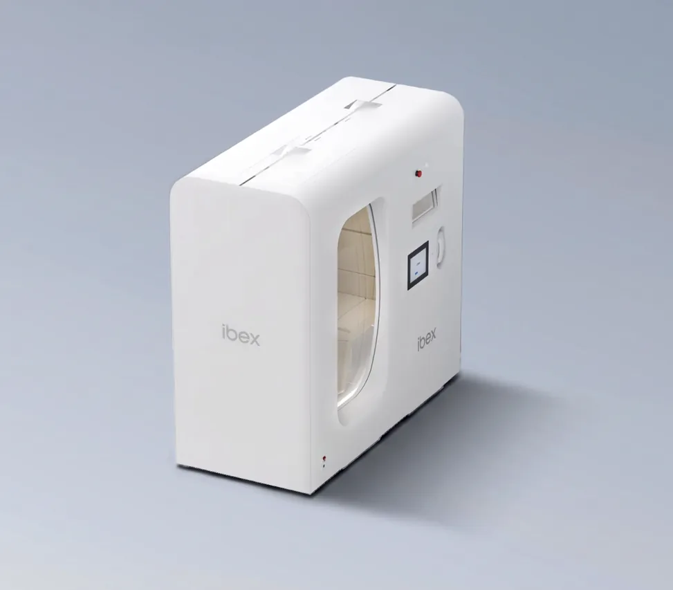
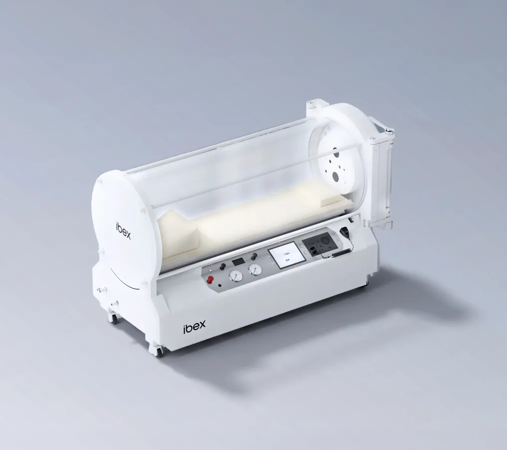
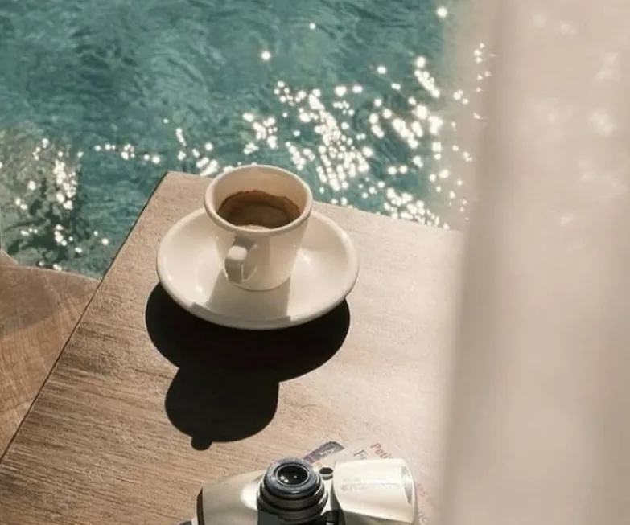
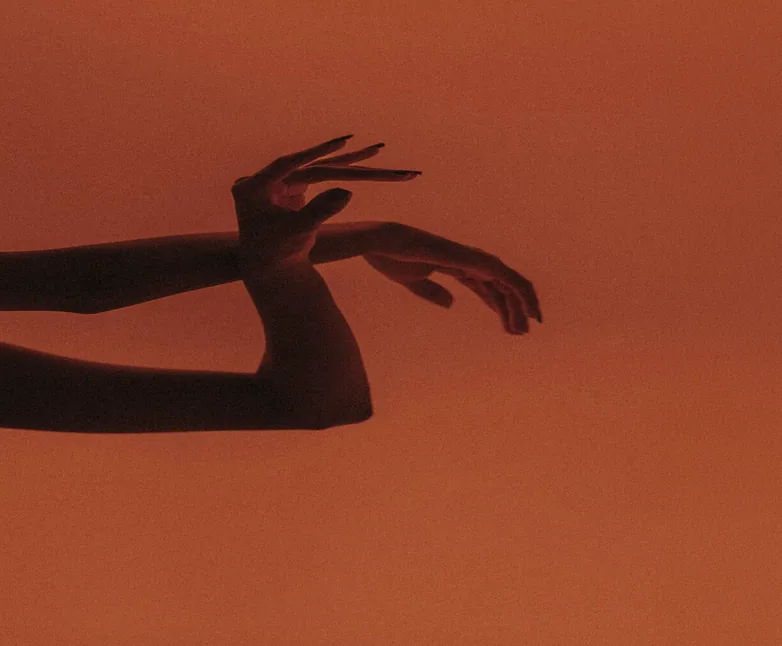
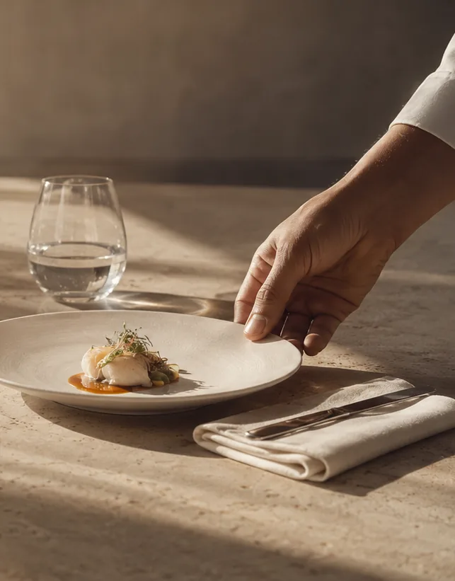
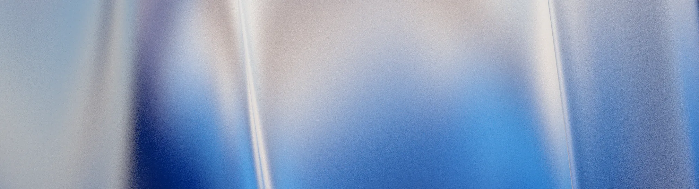
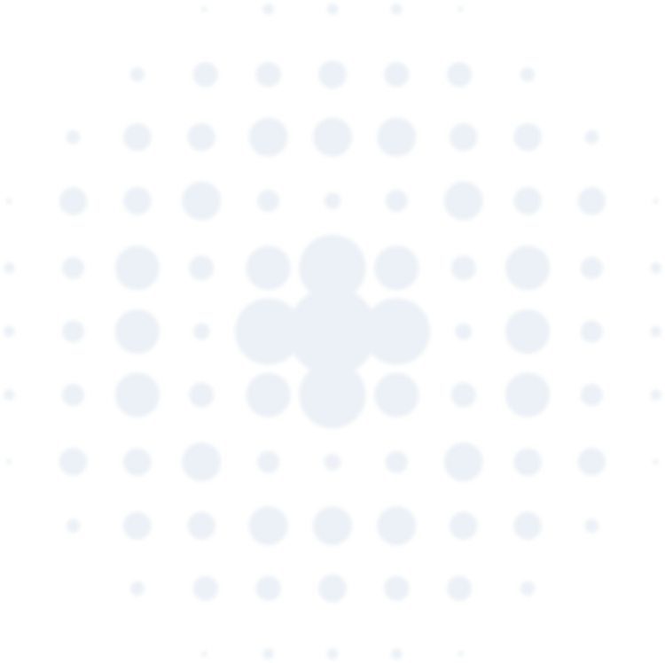

아이벡스 소식
아이벡스 소식아이벡스 소식아이벡스 소식아이벡스 소식아이벡스 소식아이벡스 소식아이벡스 소식아이벡스 소식


아이벡스는 대기압보다 높은 압력으로 고농도 산소를 몸속 깊은 곳까지 전달합니다.
챔버 안을 채우는 의료용 산소
가동 시작부터 의료용 산소로 채워지고,
공급된 산소가 챔버 내부의 압력을 올립니다.
산소 농도와 압력은 실시간으로 모니터링됩니다.
0.1 ATA 단위로 제어되는 압력
대기압보다 높은 압력 환경을 0.1단위로 조정합니다.
가압 – 유지 – 감압으로 이어지는 세션은
설정된 프로그램에 따라 진행됩니다.
A.B.T. RIDE®
고막의 순응도에 따라 가압 속도를 자동으로
조절하는 특허 기술
가압 중 고막의 움직임을 실시간으로 측정합니다.
그 신호에 따라 챔버가 압력을 올리는 속도를 스스로 조절합니다.
산소의 시간을 만드는
아이벡스의 세 가지 챔버.

monoplace chamber

monoplace chamber

monoplace chamber
아이벡스 소식을 만나보세요

아이벡스 소식아이벡스 소식아이벡스 소식아이벡스 소식아이벡스 소식아이벡스 소식아이벡스 소식아이벡스 소식


아이벡스 소식아이벡스 소식아이벡스 소식아이벡스 소식아이벡스 소식아이벡스 소식아이벡스 소식아이벡스 소식
아이벡스 소식아이벡스 소식아이벡스 소식아이벡스 소식아이벡스 소식아이벡스 소식아이벡스 소식아이벡스 소식

아이벡스 소식아이벡스 소식아이벡스 소식아이벡스 소식아이벡스 소식아이벡스 소식아이벡스 소식아이벡스 소식
아이벡스 소식아이벡스 소식아이벡스 소식아이벡스 소식아이벡스 소식아이벡스 소식아이벡스 소식아이벡스 소식

이 페이지는 의료진 전용공간입니다.

이용 전 궁금한 점을 확인하세요.
1회 이용 시간은 보통 30분에서 60분입니다.
정확한 시간과 압력은 의료진과 상담 후 결정됩니다.
별도의 휴식 없이 바로 일상으로 돌아갈 수 있습니다.
이용 직후 가벼운 나른함이나 귀의 먹먹함이 느껴질 수 있으나 잠시 후 자연스럽게 사라집니다.
불편함이 이어지면 의료진에게 문의해 주세요.
치료받지 않은 기흉이 있거나 임신 중인 경우에는 이용하실 수 없습니다.
그 밖에도 건강 상태에 따라 제한될 수 있으니 이용 전 의료진과 상담해 주세요.
압력이 오르내릴 때 귀가 먹먹해질 수 있으며 비행기 이착륙이나 물속에서 느끼는 감각과 비슷합니다.
아이벡스 챔버는 압력을 미세하게 조절하도록 설계해 귀가 서서히 적응하도록 돕습니다.
챔버 내부는 성인 한 사람이 편안히 눕거나 앉을 수 있는 공간이며, 투명 창으로 바깥을 볼 수 있습니다.
인터폰과 호출벨로 언제든 의료진과 대화할 수 있고 이용 중에는 영상이나 음악을 즐길 수 있습니다.